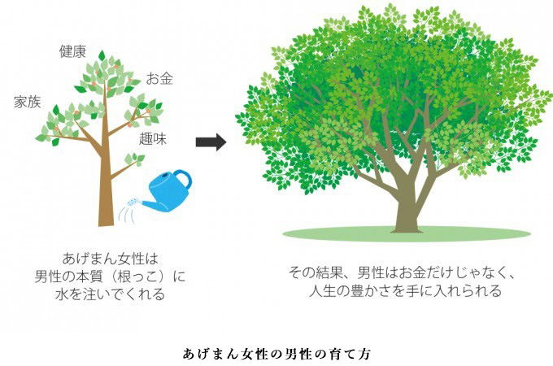
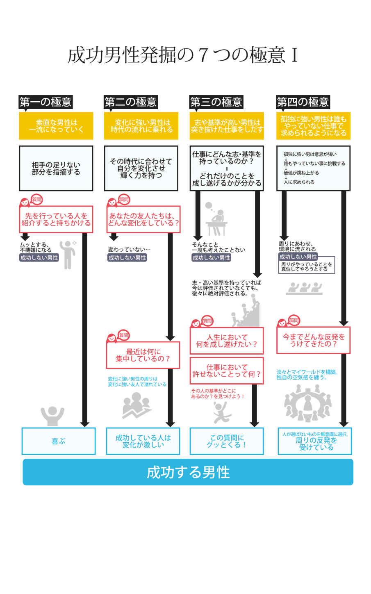

| あげまん理論(R)入門読本: デキる男が生涯の伴侶を選ぶそのメカニズムを徹底解説 (イグアス出版) | |
| 中村あきら | |
| IGUASUSHUPPAN (2018) | |
「どうすればいい男性を見つければいいのか分からない」「自分の旦那をどのようにサポートすれば稼げるようになるか分からない」「部下や上司の男性をどのように助けてあげたら力になるのか分からない」
こんな風に感じている女性はとても多い。
世の女性の多くが「男性の力になりたい」と心から思っている。でも、どうすればいいか分からない。それはなぜだろうか。答えは、かんたん。男性と女性では成長の仕方も方法も全然違う。それを理解するのがすごく難しいからだ。
男性がどのように成長するのか、男性がどういうマインドでいれば成功したりお金を稼ぎやすくなるのか。それを知る必要がある。
この本では、あなたがどのようにすれば、あなたの周りの男性たちを輝かせ、成長させ、豊かになれるかが分かる。ぜひ読み進めて見てほしい。
ぼくは20 代で起業し、年商数億円までの会社に成長させ、ビジネスの聖地シリコンバレーに移住した。そこでは数多くの世界の成功者が集まる場所で、世界有数のビジネスマンや起業家が集まっていた。ぼくはそんな世界最先端のビジネスの場で、新たなビジネスチャンスを見つけようとしていた。その中で、様々なビジネスマンの夫婦のあり方に目が行くようになった。成功した日本人経営者の夫婦、Googleに務める夫婦、ベンチャー起業家の夫婦など、様々な成功者たちの夫婦のあり方を近くで見ることができたのだ。
そこで感じたことは、「成功している男性」「優秀な男性」のそばには、とても優秀な女性がいるということだ。彼らの栄光の裏側には素晴らしい女性がいて、その存在に支えられながら表舞台に立っていたのだ。
ぼくはその女性たちの在り方を見て、とても感動したのを覚えている。
ぼくは尊敬する成功者たちの隣にいる女性たちこそ、成功に欠かせない要因だという結論に至った。
日本に帰ってきて、講演会や個人セッションを通して、数千人の女性にその方法を伝えてきた。同時に、ブログでその方法を体系化していった。そうして次第に、女性たちがＳＮＳを通じてどんどんシェアをしていくようになったのだ。
ぼくはこれに名前をつけた。
中村あきらの「あげまん理論 」。
「あげまん！？」と多くの人に最初は驚かれるが、このあげまんというニュアンスが、パートナーを成功させる女性の姿にぴったりだったのだ。
この「あげまん理論 」では、女性と男性の違いを分かりやすく説明しながら、どのように男性をサポートしていけば、男性は成長していくのかというものを体系化した。
この技術を使えば、あなたの周りにいる男性がどんどん成長して、結果を出していけるようになるだろう。そんなあなたを男性たちはきっと離さないだろう。実際に、この理論を使ったら「結婚できました！」「旦那がどんどん結果を出しています」という声が多数ある。
この理論を使って、あなたから始まる豊かさを広げていってほしい。
あげまん王子・中村あきら
あげまんの一般的な意味は、セックスをした男性の運気をあげ、社会的な成功へと導く女性のことを言う。
逆に男性の運気を下げる女性は「さげまん」と呼ばれてきた。
ただし、本来のあげまんの意味は「まん」とは「間」という言葉が転化したもので、運気・潮目・巡りあわせを意味する言葉がある。
つまり「あげまん」は「より良い巡り合わせ」という意味であり、「さげまん」は「不運な巡り合わせ」という意味になる。
この「あげまん理論 」では、この本来の「あげまん」という意味に立ち返えっている。
セックスという意味のあげまんではなく、コミュニケーションやパートナーシップを通じて「男性パートナー（彼氏、旦那、男性友達）」を成功させることができる女性を「あげまん女性」と呼んでいる。
また同じように、女性パートナーを支える男性も数多く存在する。
女性経営者の夫や女性アーティストの夫など、彼らは決して表には出てこないが、社会に出て行く「女性パートナー（彼女、妻、女性友達）」を影からサポートしている。
そんな男性をこの「あげまん理論 」では「アゲメン 」と言う。なぜこのように言い表したのかというと、現代の夫婦像というのは昔と全く違っているからなのだ。
今の時代の夫婦のパートナーシップは、昔の日本とは様変わりしている。
昔は、男性が働き、女性が家事をするのが常識だったため、男性を立て出世させる「あげまん」女性が求められていた。
しかし時代は変わっている。
夫婦の在り方は多様化し、女性が働く夫婦もあれば、共に働く夫婦もいる。
そんな多様化した現代において、女性たちはどのようなパートナーシップを持てばいいのか迷ってしまっている。
今、日本では女性がどんどん社会進出している。
下記のグラフでもわかるように、女性の平均賃金は毎年伸びている。
それに比べて男性の平均賃金は平成９年から全く変化していない。
また、日本の会社の数を見ると、20 年前から減少し続けている。
２００９年から２０１４年の間に開業した会社は60 万社に対して、廃業した会社は１５０万社にも上る。（中小企業白書２０１６より）
会社の数が減っていて、求人の数も減っているのに、どんどん女性の就業率と給料が上がっているのだ。女性が社会的に求められているか一目瞭然だろう。
このように今の時代は昔とは違った夫婦の関係性や在り方に突入しているのだ。
これだけ時代の様子が変わってくると、あなたの親の世代の夫婦観、結婚観はあなたの理想のそれとは全く違うだろう。
今まさに新しい時代に沿ったパートナーシップの在り方が求められているのだ。
そして多くの男女がこの違いが分からず混乱している。
時代が変わったことを認識し、昔の夫婦の在り方、昔の成功の在り方ではなく、時代の波にあなたが乗ること。そして男性をその時代の波に乗せてあげることが新たなあげまん女性の役割とも言えるだろう。
昔と現代において何が一番変わったのかと聞かれた時に、まずこう答える。「多様化」だ。よく多様化って聞くけど、どういうことなの？という方に改めて説明しよう。
戦後やバブルにかけて日本の成功・仕事の在り方は、シンプルなものだった。戦争で何もないところに物をつくり、会社を大きくしていく。働く人は、就職し会社で出世していくことが成功だった。
起業家たちも新しいお店や会社を開き大きくしていくことが成功だった
しかし今はどうだろう。
人生の選択肢はどんどん増えている。
就職も転職が当たり前になり、一つの会社に留まる人はほとんどいない。インターネットの発達により、住む場所、ビジネスのやり方の選択肢も日に日に増えている。
昔は、今ほどに選択肢は多くなかった。良く言えば窮屈だが、何を選べばいいのかはシンプルだっただろう。
自分の結婚相手も家が決めてくれたというのもあった。
人々は選択肢が増えたことでより自由になった。結婚や仕事、住む場所さえも自分に合ったものを「選べる」というのはとても素晴らしい社会発展だ。これが「多様化」だ。
この選べる社会発展により、様々なものが多様化した。
「個人の価値観」「ライフスタイル」「働き方」「生き方」、そして「成功」さえも今ではいろんな形がある。
しかし、その選択肢が増えたことにより、人々は「何が自分に合うものなのか？」を考える必要性が出てきた。
これはある人にとっては素晴らしいことであり、ある人にとっては混乱の原因となっている。
前者は「自分というのものが分かる人」、後者は「自分が分からない人」だ。
自分が分かる人というのは、「選べる」社会というのは素晴らしいものだ。あれが欲しい、自分にはこれが合っていると分かる人は、それを探す方法が世の中にはありふれている。
しかし、「自分が分からない人」には、「選べる」というのはすごく難しいものだ。
今までは誰かが用意したもの歩んでいけば良かったが、いきなり「あなたは自分で選べるんですよ」と言われても「選び方が分からない」と混乱するのも無理はない。
今、就活や婚活、妊活など様々な活動が広がっている。
この「活動」はどれも、ライフステージにおける、自分に合ったものを探し選ぶための模索だ。なぜ、こんなにも自分に合うものを探すのが大変のか。
その答えは、多くの人が「自分というものが分からない」からだ。
世界がこれだけ多様化したのに、日本の教育はずっと昔のままなのだ。
決まった時間に決まった教科を受け、決まったものを全員が暗記し、テストに挑む。
そんな教育が大学まで含めると20 年間与えられる。
そして大学を卒業したらいきなり言われるのだ、「あなたに合った仕事を選びなさい」と。
結婚をするときに言われるのだ、「あなたに合った人を選びなさい」と。
昔の社会であれば、その教育でよかった。
あなたはこの会社に入りなさい、あなたはこの人と結婚しなさいと、教育の流れと同じように社会も決まったものを提供していた時代だったからだ。
しかし、最近の世代は違う。
20 代〜40 代の世代は、ちょうどその過渡期にある。
社会が変わったが教育が変わっていない世代だ。
ぼくが大切にしていることはここにある。社会と教育をつなぐことだ。
ぼくは「あげまん理論 」を使って女性たちの「選ぶ」をお手伝いしたい。
あなたは「あげまん」女性と聞いて、どんな女性を思い浮かべるだろうか？
家を守り、男性の１歩後ろを歩き、自分というものを消し、何事においても男を立てながら出世させていく。
そんな風な女性を思い浮かべるとしたら、20 世紀にいわれていたあげまん女性のイメージをそのまま持ってきてしまっていると言えるだろう。
20 世紀の男性の成功と、21 世紀の男性の成功の形というのも変わってきている。
それに伴ってあげまん女性に求められる姿も変わっている。
20 世紀の社会は、シンプルな男性社会であり階級社会だった。
ヒエラルキーのある組織を駆け上がり、大出世することが成功であり、それをサポートした女性が「あげまん」といわれてきた。
そのために「あげまん女性」がすることは、家を守り、夫がいなくても後継者を育てたり、階級社会で出世するようなサポートをしてあげることだった。
一方で現代において、男性の成功というものは、昔と違って組織をかけあがり出世すること＝成功ではない。
例えば成功ということを「名声を手にする」という一つの基準として設けたときに、昔と一番の違いがある。
それはメディアの多様性だ。
テレビだけではなく、YouTube、ネットニュース、ブログ等、企業や個人に限らずメディアが増えている状態だ。
昔は、メディアが極端に少なかったことにより、大きな組織のトップというものが「名声」を得る土台となった。
しかし今は違う。
メディアの多様性によって、「他とは圧倒的に違うこと」が「名声」を手に入れる土台と変わったのだ。
これによって、あげまん女性のサポートも変わってくる。
今までのシンプルな男性社会では、仕事に集中させ、人間関係の政治がうまく回るよう男性を教育し、組織内で一目置かれる人物へとしていけばサポートしている男性は成功していったのだ。
一方、メディアが増えたこと、起業家が増えたり、成功というものが多様化した現代で求められるのは「個性」だ。
つまり「すごい人」が称賛されるのではなく、「他と違う人が」称賛されるのが現代なわけだ。
だから現代のあげまん女性は、「男性の個性を解放させてあげる女性」だと言える。
男性を成功させたいと思ったときに、見つける基準も違う。
組織から愛される男性ではなく、他とは違う個性を持った男性を選ぶようになる。
そしてサポートも、もっと「自分」というものを表現させつつ、仕事を選ばせ、お金を稼いでもらうことになってくる。
これが現代のあげまん女性の役割なのだ。
あげまん・アゲメンとはいわば「異性のセルフイメージを上げてくれる存在」であると言える。
その人と出会うことによって、自分の殻がくずれたり、自分に自信をつけてくれる人のことだ。
しかし、男女という視点で見たときに、男性と女性のセルフイメージの上がるきっかけというものはまったく違う。
男性は、「自分以上に自分の未来を信じてくれる女性」と出会った時にセルフイメージが上がる。
女性は、「自分以上に自分のタブーを許してくれる男性」と出会った時にセルフイメージがグンッと上がる。
まずはこの大きな特徴から紹介しよう。
あげまんとは「自分以上に自分の未来を信じてくれる女性」だ。
男性はとにかく未来を見ている。自分はこういうことをしていきたい、こういう風に仕事をしていきたい。
「今」よりも「未来」に重きを置いている特性がある。
だからこそある程度、自分の未来については考えに考え抜いている。しかし、考え抜いているだけに、そこには常に大きな不安があるんだ。
「自分は、こうなっていきたいけど、それは本当にできるんだろうか？現実を考えなければいけないんじゃないか？」
ってずっと未来に対して理想と現実を行き来している状態なのだ。
だからこそ、「自分以上に自分の未来を信じてくれる女性」、つまりあげまんと出会うと、その出会いだけでもその人にインパクトを与えるし、自信を与えることができる。
男性は、自分がやりたいことが「価値」があるんだって心から思えたとき、どんどん前に進んでいくことができるのだ。
女性は、とにかく調和や共感を大切にしているという特性がある。
例えば、女性同士の集まりがあったときに、女性たちは意識的にも・無意識的にもその集まりの中から異質になるような発言や行動はしない。その集まりにふさわしいレベルの行動や発言をするものだ。
他にも、特定の会社に入ればその会社の色に染まるのも早い。特定の国に行けば、その国の色に染まるのも早い。
それだけ共存・共栄していくレベルが高い。
しかし、それは裏を返すと自分に対して制限をつくることが多いということだ。
アゲメン男性は、意識的・無意識的に女性が自分にかけた制限をとってあげている。
ＳＥＸ観や性癖、スピリチュアルや宗教観、その国特有の一般的な女性らしさ、不倫や浮気、ジェンダー、働き方・あり方に対する価値観など、自分が置かれている環境で、その人の自信というものは変わってくる。
つまり、タブーが多いと感じる環境などでは、女性は「らしさ」を発揮できず、魅力や力が小さく表現されてしまうことになる。
アゲメン男性は、タブーをとりはらったり、タブーから自由になりたいと思う女性を認め、そんな個性に「価値」があるんだよって言ってくれる男性だ。
そういう男性のもとでは、女性は本当に楽しく働いたり、どんどん力を発揮していく。
その循環がどんどん女性に自信を取り戻していくのだ。
あげまん女性とアゲメン男性は、パートナーにどのような影響を与えることで、彼らを成功に導いているのだろうか。
まず理解するべきは、男性と女性の成長についてだ。
「男性と女性の人間関係」について全世界でシリーズ累計５０００万部を発売したジョングレイ博士はこう語っている。
女性は年齢が若けれ若いほど、自分を犠牲にして相手の欲求を満足させてあげようとする。対する男性も、若ければ若いほど自分本位の発想と行動をとり、他人の欲求などにはまったく気を回さない。
しかし、成長していくにつれ、女性は他人を満足させるために生きていくことがいかに自分自身をないがしろにしてきたかに気づくようになり、男性は他人を尊重し、尽くしてあげることがいかに自分を高め、満足感を与えてくれるかを認識できるようになる。
これが男と女の最大の変化であり、成長なのである。
by ジョン・グレイ
このジョン・グレイ博士の言葉から分かるように、男性にとっての成長とは「与える」ようになることであり、女性にとっての成長とは「受け取る」ようになることだ。
経営者の奥さんやあげまん女性を見てきて感じるのは、あげまん女性は、男性に対して「与える」とはどういうことかを身を持って教えているということだ。
逆に、女性経営者の旦那さんやアゲメン男性を見てきて感じるのは、アゲメン男性は、女性に対して「受け取る」とはどういうことかを身をもって教えている。
男性は与えれば与えられるようになればなるほど、社会でどんどん求められていくし、女性は受け取れば受け取るほど、社会でどんどん活躍していくことになる。
女性はその性質上、多くのことに気が付く。
「あの上司には、こんな風に仕事上で接すると喜んでくれるわ。」
「あの同僚の女性には、こういう風に接すると好感度が上がるわ。」
「こういう身だしなみをすると人はあなたへの信頼が増すと思うわ。」
それらの言動は結局のところ、何をしているかというと「あなたがあの人に与えられるものはこれよ」ということを教えてくれているんだ。
男性は、若ければ若いほど「与える」ということがどういうことか分からない。
未熟であればあるほど「与える」重要性や、それに付随する満足度を理解することができないんだ。
そんな男性に、女性が隣でアドバイスをすることで、男性は「与える」ということ学び、どんどん成功していく。
「君が思っている以上に、君の仕事は多くの価値を生んでいるよ。」
「君の雇い主や上司に、もっとほしいものを言ってみたらいいよ。男性は言ってもらったほうが嬉しいんだよ。」
アゲメン男性は、女性にこう言ってくれる。
しかし、こと女性においては、男性からの言葉のアドバイスよりも、実際に男性が受け取っている姿を見たほうが吸収が速い。
そこでぼくのセミナーに参加した何人かの女性による証言を紹介して、アゲメン男性が彼女らに与える影響を見ていこう。
「彼を見ていると、私は人生でどれだけ肩肘を張って生きてきたかがわかったわ。彼のように、どんどん受け取れば自ずと愛されるし、人は親しみをもって私に接してくれるし、仕事も頼まれるようになるんだってことを学んだわ。」
「彼と一緒に暮らして、私は「受け取る」という意味を勘違いしていたことに気が付いたわ。私は受け取ったら、それ以上何かを返さないといけないと思っていた。でも彼は「受け取っている」だけなの。最初はそんな彼に嫉妬したわ。だって、私はこれだけ「与えている」のに、なぜ彼や他の人は私に返してくれないの？って。一番むかついたのは、そんな私よりも彼の方が多くの人に「愛されている」ってことなの。でも、そんな彼を見て私は何かを変えないといけないって思ったの。」
「彼を観察していて気づいたことがあるわ。彼は人が離れていくことに、まったく執着がないってこと。ずっと一緒にいたら、受け取るだけの彼に離れる人もいる。でも彼はそんなことをまったく気にしていなかったの。だから、彼はずっと「そのまま」で、そんな彼を愛してくれる人だけがずっと残っているのよ。そんな彼を見て、私は八方美人のようなことをしていたんだって気づいたの。」
こんな風に女性は、男性にアドバイスされるよりも、「受け取り上手」な彼のことを観察することで自分に必要なものに気づいていく。
アゲメン男性は「受け取る器」がとても大きい。
社会的に成功したい女性に、隣で自然に受け取っている男性がいると、その男性を見て女性は学ぶことができるようになるのだ。
上記からわかることは、男性は「与え上手な女性」（あげまん女性）、女性は「受け取り上手な男性」（アゲメン男性）をパートナーにすることで社会的に成功していく。
さらに言うと、男性は与え方を言葉でアドバイスされる必要がある。
男性は直接自分に向けられた言葉でしか、自分に必要なことだと認識することは難しいからだ。
女性は「受け取り方」を隣で実際に見せてくれる男性が望ましい。
女性は仕事場でもロールモデル（手本となる女性）がいるのといないのでは、まったく成長が違う。
これと同じように、受け取るということは一体どういうことかを隣で示してくれるロールモデル、つまりアゲメン男性が必要なのだ。
ぜひあげまん女性、アゲメン男性の影響を受けて、社会に求められるようになってほしい。
あげまんとさげまんの違いは何なのだろうか。
その姿勢や想いの違いは、恋愛のどんな場面で現れてくるのだろうか。
この章ではこのことについて深く取り上げていく。
男性が結婚をしたいと思った時、男性がこの人だって決断するとき、最終的に選ぶのは「あげまん」なんだよ。
男性は、女性が思っている以上に「仕事」が人生の大半を占める生き物だ。
女性が人生で「愛されたい」と思うぐらい、男性は仕事においての自己実現が人生で重要なんだ。
そしてお金の悩みも女性より大きい。結婚を考えたときに必ずお金のプレッシャーは頭をよぎるはずだ。
これは結婚を意識した瞬間から、男性は強烈に悩みだす。
結婚を決めたことがない男性と決めた男性は、まったくといっていいほど女性観が変わる。
それは結婚を決めるときに、そのプレッシャーを経験するからなんだ。
とにかく、それぐらい男性は仕事なんだ。
そんな男性が最終的に選ぶのは、一緒にいると自分の仕事を上向かせてくれる女性だってことは何ら不思議じゃない。つまり「あげまん」だ。
「あ、この人と出会ってから、仕事がうまく行き始めたな、お金が回りだしたな。」と男性側が思ったら、なたを手放すことなんて絶対にありえない。
むしろ「結婚しないと離れる」と言えば、「それだけは困る・・・」と言われるはずだ。
一度離れたとしても「やっぱり君がいないと困る・・・」とあせりながら懇願してくるはずだ。
キレイな女性や性格が良い女性は、男性から最初に選ばれるかもしれない。でもそれはお互いが成長できなかったら、いつかは離れることになる。
どこまでいっても「〝途中〟の女性」から抜けれられないんだ。
多くの女性は、完璧な男性を探す。
「浮気しないで、毎日花を買ってきてくれて、年収１０００万円以上で、記念日にはサプライズをしてくれて、家事と子育てを手伝ってくれる人。」
そんな男性だ。
しかし、そんな男性はほとんどが彼女や奥さんがいて、女性に育てられ完璧な状態になっていることが多い。
つまり、多くの女性が完璧な男性と思っているものは、あげまん女性に育てられ支えらている男性だということだ。
賢い女性であれば、最初からそんな男性はいないということは知っている。
それよりも、一緒に成長できる男性。真白いキャンパスに、これから色んな絵を一緒に描ける男性。これからもっと伸びていく男性を選んでいくのが「あげまん」女性だ。
さげまん女性は、「この男性は自分のことをわかってくれる」と強く思ったら好きになることが多い。
しかし、この好きになる衝動の奥には、自分への自信のなさがあるんだよね。
哲学的に言うと、自分のことを本当にわかってくれる人なんてものはこの世にはいない。
自分のことを本当にわかってあげられるのは自分だけだ。
何十年連れ添っている夫婦の人が言っていたが、いまだかつてダンナが何を考えているか分からないと言っていた。
ぼくはこれが真実だと思う。
分かりあえることなんかないよ。
でも、お互いのことが分かりあえなくても、一緒にいられる人を探してほしい。
そういうことが分かっている「あげまん」女性は、男性の器（うつわ）を良く見ている。
その器と比べて、実際の社会の評価が低いと感じたら「もったいない！」と思うんだ。
「この人は自分が支えたら、どんどんすごい人になるわ。」
そのワクワクが男性を好きになるきっかけなんだよ。
さげまんは、男性が調子がいいときに現れる。
多くの女性は自信がある男性が好きだ。ただ男性のほとんどが自信があるときは、調子がいいときだ。
調子がいいときに群がってきたさげまん女性は、男性が調子が悪くなったら、連絡をすることができない。
男性側も、調子が悪い自分を見せることはできない。
これが多くの男性が結婚できない理由だ。
あげまん女性は、男性の調子がいい悪いではなく「本質的な価値」を見ている。
だからこそ、調子がいいときを特に狙って近づいて行ったり、調子が悪いときに急に離れたりしない。
どちらもその男性の「本質的な価値」ではないと思っているからだ。
その視点が、男性を安心させ、あげまん女性は結局「最後に」選ばれる。
さげまん女性は、とにかく世間体を気にする。
それは自分がどうかよりも、人からどう見られるかのほうが大事だからだ。
だからこそ、恋愛というものは「お互いが好きになる→男性から告白する→女性が付き合うことにＯＫを出す→キスをする→セックスをする」といった流れや順番に囚われている。
行きずりの恋から始まった恋愛や、ナンパやセックスから始まった恋愛は許せないし、男性の容姿やステータスも、友達に紹介できるものでなければならない。
あげまん女性は、そんな常識などまったく関係がない。
この人だ！と直感的に感じれば、何だってする。セックスから始まる恋やそれが例え略奪愛だろうが、だ。
それは自分に自信があることと、その人は自分と一緒にいたほうがいいという直感が働くからだ。
世間体に縛られた恋愛しかできないと、あなたを本当に必要としてくれる男性は一生現れない。
結婚したあとも、男性に世間体を押し付けることが目に見えてくるからだ。
考えてみてほしい。世間体を押し付けられた男性が成功するだろうか？
さげまん女性はとにかく男性を「心配」する。
良かれと思ってやっていることだと思うが、とにかく男性は「心配」されることが嫌いだ。
男性を心配すればするほど、男性の自信は揺らいでいく。
例えば男性同士がお互い「心配すんな」「大丈夫だって、絶対成功するよ。」という風に励ます。これはお互いに心配しないことや、これは小さなことなんだと言われることが、気が楽になるとわかっているからだ。
女性同士だとこうはならず、「それは大変だったね」「ひどいねー！」といって、ことの重大さをお互いが共感し合うことでお互いを励ます。つまり心配し合うことでお互いを励ます。
女性への対処法を、男性へやってしまうのがさげまん女性の悪いクセだ。
男性は自分自身でその問題を解決ができるし、目標や成功が自分で達成できるものだと信じてほしいのだ。
つまり「心配」するのではなく、あなたならできると「信頼」してほしいわけだ。
あげまん女性はこの男性の気持ちを良く分かっている。
男性が悩んだとき、男性がストレスを受けているとき、心配するのではなく、「信頼」してそっと見守ることができる。
さげまん女性は、セックスを奪われるものだと思っている。
そうして簡単には自分を許すまいと身構えている。それをこじあけた男性は、自分から大切なものを奪っていった人になる。
さげまんは奪われたものを回収するがごとく、その男性から愛情を引き出すのに必死になる。
さげまん女性に言いたいのは、男性は女性から何かを奪いたいと思っているだろうか。
奪われたと思った人と、一緒にずっといたいと思うだろうか。ってことだ。
奪われたものを回収しようとする愛は、文字通り重くなる。
男性はその愛の重さに違和感を感じて、さげまん女性から離れていく。
あげまん女性にとってセックスは与えるものだ。
男性は女性とセックスをすれば、大きな自信を得ることができる。
あげまん女性は、男性が自信を持つ姿を見るのが好きだし、そんな自信を持たせた自分を誇りに思う。
そんな風に感じている女性を、男性はさらに好きになる。
男性の愛情タンクは常に満タンになり、仕事でも多くの人に「与える」ことができるようになるのだ。
どうしたら恋愛において、あげまん女性になれますか？と聞かれたら、一にも二にも「自分を好きになってください」と答える。
自分で自分をもっと好きになることで、あなたは多くの人に与えることができるようになる。
自分を嫌いな人は、愛情タンクに穴が開いている状態だ。
誰かがどれだけ愛情を注いでも、いつも穴から出ていってしまう。
自分が好きな人は、愛情タンクに穴がない。だから少しの愛情ですぐに溢れてくる。
その溢れた分を多くの人に分け与えることができるんだ。
ぜひ自分を好きになってほしい。
そしてあなたのパートナー、多くの男性に愛を振りまいて、みんなを幸せにしてあげてほしい。
あなたがいくらあげまん女性でも、隣の男性がセルフイメージをさげる男性（＝さげメン男性）であれば、どんなにあなたが充実しても、素晴らしい人生を生きるのは難しいだろう。
さげメンとアゲメンの一番の違いは、女性を成長させること、女性を生き生きさせることに対して大きな充実感を感じるかどうかだ。
その姿勢や想いの違いは、恋愛のどんな場面で現れてくるのかを紹介しよう。
アゲメン男性は、女性が調子がいいときに現れる。
前の章で「あげまん女性は、人生のどん底に現れる。」と記したが、女性と男性の出会いタイミングは逆だ。
例えば多くの男性は、調子がいいときに恋愛をしたがる。カッコいい自分を見てほしいからだ。しかしそこで集まるのは「さげまん」ばかりになる。本当に見る目がある女性は、下がったときほどチャンスだと思うからだ。
逆に多くの女性は、調子が悪いときに恋愛をしたくなる。王子さまに自分の人生を変えてもらいたいという願望があるからだ。
しかし、ほとんどの場合、調子が悪いときにここぞとばかり相談にのったり、優しくしたりする男性は「さげメン」だ。
そこには多くの「自分のため」の下心が集まる。
アゲメン男性は、あなたが調子がいいときに現れる。
そして調子がいいあなたをもっと伸ばしたいという願望を持っているのだ。
ちなみに調子がいいというのは、仕事が忙しいということではない。
人生に充実しているときだ。
さげメン男性は、自分よりも仕事ができない女性に恋をする。
それゆえに付き合ったり、結婚したりして女性がどんどん出世していったり、社会で活躍しだすととたんにライバル意識を持ってしまう。
ライバル意識を持たれたと感じた女性は、負けることでしか一緒にいられなくなってしまう。
それではあなたの本来の力が発揮されることはほとんどなくなるだろう。
アゲメン男性は、そこに対するプライドがない。
あなたが仕事でどんどん求められていって、社会で活躍するたびに「すごいね～」ってニコニコ微笑んでくれるだろう。
ただでさえ社会で戦っている女性が、家でも戦わされたらたまったもんじゃない。
戦う女性を、家でリラックスさせてくれるのが「アゲメン男性」なのだ。
女性にとって話すこと、話を聞いてもらうことはなくてはならないものだ。
アゲメン男性は、その聞き方に特徴がある。
さげメン男性は、話の知識や情報にしか興味がない。
だから、同じ話や興味がない情報の話をすると話をさえぎり「あ、それ見た。」「行ったことあるよ」「それ知っている」といった言葉でコミュニケーションを遮断してしまう。
つまり、知っているか知らないかで勝負をしていることが多い。
しかし、アゲメン男性が興味があるのは話の中身だけではない。
あなたが話している感覚にこそ興味があるのだ。
だけどアゲメン男性は、「知ること」よりも「感じること」に多くの楽しみがあるんだ。
だからアゲメン男性は、同じミュージカルや遊園地に行ったとしても、「やっぱりあの役者が違うと、ショー自体の感覚も変わるね。」「春と冬だったら、こんなにも感覚が違うんだね。」と言った風な感想になる。
アゲメン男性は、同じ話、同じことを、何度でもあなたと楽しむことができるんだ。
さげメン男性は、自分の趣味・性向でしか興奮することができない。
だから最初こそ新鮮だが、慣れてくると道具や衣装・シチュエーションに頼らなくてはならなくなる。
アゲメン男性は、相手の興奮度合によって興奮する。
女性が感じれば感じるほど、興奮し、女性が満足すればするほど満足するわけだ。
アゲメン男性は、女性とのフィーリングの度合いによって、セックスの満足度が変わってくる。
これは、アゲメン男性が感覚を大事にしているからだ。
だからアゲメン男性は、同じ女性とのセックスを何度でも楽しむことができる。
「知っている」という世界は有限だが、「感じる」という世界は無限に広がっているからだ。
アゲメン男性のこれらの感性は、女性を潜在的に安心させることができる。
「この人は飽きない」という安心感は、外で戦う女性にとって大きな潤滑油になる。
さげメン男性は、女性を「さげまん」にする。
さげまん女性の根本的な問題は、心のどこかで男性を恐れていたり、男性を憎んでいたりすることにある。
女性は男性にとって、とても影響力がある存在だ。
その影響力をマイナス方向に使えばさげまんになるし、プラス方向に使えばあげまんになる。
女性はアゲメン男性と出会うことで、成長する楽しみをその身を通して経験することができる。
その喜びは、ずっとその女性の中に残る。
自分が成長して感動したという経験が人生にあれば、その感動を他の人にも味わせたいと思うのが人間の本能だ。
アゲメン男性に成長させてもらった女性は、男性を成長させることができ、そこに喜びを感じる「あげまん女性」になるのだ。
あなたがもうすでに社会的に求められているのだとしたら、あなたの周りにはあなたを支えている男性がいっぱいいるはずだ。
その人たちに目を向けてみよう。
結婚とは、相手を探すことじゃない。気づくことだ。
あなたの成長やキャリアを心から喜んでいる男性が、あなたの周りにきっといるはずだ。
その男性こそあなたにとっての「アゲメン男性」だよ。
あなたの社会での素晴らしい活躍と、それをサポートしてくれる素晴らしい男性との出会いを心から祈っている。
あげまん女性は「与える力」がとても優れている。
ここで一つ疑問がわく。
あげまん女性の「与える力」とは具体的にどのようなものなのだろうか。
何を与えているから、男性はあがり、経済的・精神的に自立していくのだろうか。
経営者として様々なあげまん女性、成功者夫婦を見てきて感じたことは、あげまん女性は以下の７つを男性に与えているということだ。
モテる女性はほめ上手だ。
しかしあげまん女性は、褒めるだけではおわらない。
あげまん女性は男性に「気づき」を与えているんだ。
例えば、男性は「すごい！」「かっこいい」と言われると確かに喜ぶ。しかし、その先に男性の成長があるとは限らない。
あげまん女性は「何でそういう風にやろうと思ったの？」「どうしてそれをやりたいの？」という風に深堀りしてくれる。
ほめるだけでなく、その人の根っこを深堀りしてくれるのだ。
男性は、自分に「気づき」を与えてくれる女性を決して離すことはない。
本当に男性を育てている女性は、ほめるのではなく、「気づき」を与えているんだ。
よく女性は女優でなくてはならないといわれる。
男性が求めているような女性を演じ、男性を喜ばせることで男性をつなぎ止め、長く一緒にいようとする。
しかし、演じることでは誰も幸せにならないし、２人で共に成長することはできない。
あげまん女性は、男性に存在意義を与えることで、共に成長し、男性とより深い絆を持つことができる。
男性は長く一人の女性と付き合ったり、家族を持ったりすると、誰しもがもつ不安がある。
「ぼくは彼女にとって必要な人間なのだろうか。」
「ぼくの存在は、家族一人一人を幸せにしているのだろうか。」
この不安が限界まで達すると、男性は浮気をしたり、あなたの元から離れてしまう。
そうすることで、彼女にとっての自分の存在意義を試そうとするんだ。
あげまん女性は、男性にあなたがなぜ家族において必要なのかということを教えてくれる。
「うちの親戚、あなたに影響されたみたいよ。おもしろいね。」
「赤ちゃん最近あなたに似てきたわ。きっとあなたを真似しているのね。パパの影響ってすごく大きいのね。」
あげまん女性こういう言葉を日常で男性にかけている。
男性の好みや趣向に合わせて「演じる」のではなく、存在意義を「与える」ことが大事だ。
女優にならなくても、あなたが男性の存在自体に光をあてれば、男性は必要とされる自分を誇りに思うはずだ。
あげまん女性は、本当の人脈を持ってきてくれる。
「本当に人生を変えるきっかけになった出会いは、妻がもってきてくれた。」と、成功者たちが声を揃えていっていたことが印象的だった。
男性はどうしても自分の仕事を共にする人、仕事関係から人脈を形成していることが多い。
しかし、パートナーのあげまん女性は仕事とは関係なく、人とつながることができる。
自分たちといて本当に心地いい人、一緒に成長できる人、そんな人とあげまん女性は仲良くなる。
そういった出会いが、男性の人生を変えるような出会い、一生続くような「つながり」を運んできてくれる。
そして不思議なことに、こういった「つながり」こそ男性にとってのビジネスに大きな恩恵を与えてくれる。
友人の妹のご近所さんが、あなたがコンタクトしたかった経営者の社長だったとか、２年前に知り合ったテニスのコーチが、自分の事業を伸ばすビジネスパートナーになったりとかだ。
あげまん女性は、本当の「つながり」から仕事もプライベートも大きくなっていくのだと教えてくれる。
あげまん女性は、気高（けだか）い。
ぼくもそうだが、パートナーが自立していたり、家庭や家を守ってくれたり、強い女性が隣にいると安心して冒険することができる。隣にいる女性にたくましさや強さを感じれば感じるほど、男性は大きな冒険と挑戦ができるようになる。
ぼくは20 代のころに７０００万円の借金をしたが、それができたのはぼくの力ではない。
妻にそれだけ大きな挑戦をさせてくれる器があったからだ。
これが
ぼくが起業をすることさえ恐れる妻だったら。
ぼくが社員を抱えることさえ恐れる妻だったら。
ぼくが借金をすることさえ恐れる妻だったら。
ぼくは失敗も成功もできてはいなかった。男性は、「安心感」が強ければ強いほど、大きな冒険ができる。それでやっと成功することができるのだ。
もし彼が挑戦できないのだとしたら、彼ではなくあなたが不安なのかもしれない。
あげまん女性といると、男性の自信が高まる。
彼女たちは一体何をすることによって、男性の自信を高めているのだろうか。
それは男性に「自分を再発見する力」を与えているんだ。
これは女性だけじゃなくて、全人類に言いたいことだけど、「自信がある」「自信がない」という状態は、現在や未来にはない。
「過去」にあるんだ。
過去の自分が何かに挑戦したり、与えようとしたときに「否定」されたり、うまくいかなかったときに、これは自分には向いていないと自分で決めつける。その過去の経験から「自信がない」という枠に入ってしまっているんだ。
ぼくが女性の先輩経営者のＡさんに相談したときのことだ。
あきら 「ぼくは冷たい人間なんです。」
Ａさん 「あら、どうしてそう思うの？」
あきら 「社員を何人もクビにしてしまったし、多くの人に迷惑をかけてしまった。そして何よりぼくは社員に対して冷たかった。ぼくは今まで優しい人間だと思っていたんです。だから優しい会社をつくろうと思った。でもぼくは違ったんです。冷たい人間だったということが分かりました。ぼくは経営者に向いていないかもしれないと自信を失っています。」
Ａさん 「そうなのね、つらかったわね。」
あきら 「はい。」
Ａさん 「でも、本当にそうかしら？」
あきら 「というと？」
Ａさん 「あなたは本当に冷たい人間かしら。」
あきら 「そうだと感じていますね、自分では。」
Ａさん 「会社が成長したら、１人１人は見られなくなるわ。それに大人数になったら、結果や会社に向いていない人も出てくる。あなたはただ人が増えた状態の会社の経営者の在り方を知らなかっただけじゃないかしら。だとしたら、それは勉強すればいいだけじゃない？あなたの本質が「優しい会社」を作りたかった人だったとしたら、あなたはやっぱり優しい人だと思うわ。」
ぼくはそういう風に言われて涙ぐんでしまった。
ぼくは、数多くの女性に自信を与えてもらった。
彼女たちはぼくの「失ってしまった自信」に対して、新たな視点を与えてくれたり、ぼくの光っている部分を取り出そうとしてくれたのだ。
あげまん女性は、「自分を再発見する力」を与え、「過去」に失われた自信を取り戻してくれるのだ。
あげまん女性は、「男性」と「社会」をつなげてくれる。
男性を深堀したり、本質を見ていけばいくほど、男性が自分では見えない部分がすごく価値があることなんだと、あげまん女性は気づいていく。
男性の枝葉しか見られなかったら、年収５００万円の男は、年収５００万円の男でしかない。
車好きの男は、車好きでしかない。
筋肉を鍛える男は、筋トレ好きでしかない。
でも、「なぜそれをやろうと思ったの？」「なぜそれが好きなの？」とひとりの男性と向き合っていくと、その人の根っこにぶつかっていく。
その引き出された男性の本質的な部分と、社会のニーズをつなげることが、あげまん女性はできるのだ。
あげまん女性といえば、パートナーの男性をお金持ちにするものだといわれている。
もちろんそれもあるが、それ以上に人生を豊かにしてくれる。
それはあげまん女性が、男性の枝葉ではなく根っこの部分に愛を注いでくれるからだ。
例えばさげまん女性は、男性にお金の才覚があれば、その部分だけを伸ばそうとしていく。
しかしそれでは、人生のバランスを崩してしまい、一時的にはお金持ちになっても人生に対して迷ってしまう。
それに比べて、あげまん女性は男性の本質（根っこ）に水を注いでくれる。

だからこそ、男性はかたよった部分だけじゃなくて、バランスよく成長することができる。
つまりお金だけじゃなくて、人生の豊かさを得ることができるんだ。
この章「本物のあげまん女性だけが持つ７つのギフト」全体から分かるように、だからこそ男性をあげることができるのだ。
あげまん女性は男性の本質（根っこ）を見ていて、それを伸ばしている。
ぜひあなたも深い対話で、男性の本質を引き出して、周りにいるすべての男性を成長させてみてはいかがだろうか。
あなたにもきっとその力があるはずだ。
それができれば、あなたの周りにいる男性は全てお金持ちになるだけではなく、人生の豊かさも手に入れることができる。
そんな男性たちに囲まれたあなたは、きっとどんな女性よりも幸せになっているはずだ。
ぜひ男性の根っこに目を向けてみよう。
ここではあげまん女性がいかにして旦那さんをあげていったのか、その事例をご紹介したい。
佐藤可士和をご存知だろうか？
今では一般人までもが知っている「アートディレクター」だ。
ユニクロ、TSUTAYAなどの有名企業のロゴ、Mr,ChildrenやSMAPなどの超ヒット商品のパッケージデザイン等、そのすべてを佐藤可士和がデザインした。
彼は、デザインとは「ビジョンを形にすること」だと語っていて、ぼくはホームページ制作時代にその考えを何度も参考にした。
そんな佐藤可士和を支えた妻、「佐藤悦子」さんについて紹介していきたい。佐藤悦子さんは、社会と男性をつなげたまさに「あげまん」女性だ
佐藤可士和の妻「佐藤悦子」さんは、現在は佐藤可士和が代表の「SAMURAI」で働いている。
佐藤可士和がデザインやクリエイティブを担当して、妻の佐藤悦子さんがマネージャー業を担当している。
もともと、佐藤悦子さんは広告代理店の営業職。その後、可士和氏との結婚を機に、外資系化粧品会社のＡＤ／ＰＲマネージャーに転身。その後、佐藤可士和の事務所を手伝うことになった。
「佐藤が博報堂を辞めて独立し、事務所SAMURAIを立ち上げる頃のこと。彼が、『ミケランジェロやピカソ、アンディ・ウォーホルのような時代のアイコンになりたい』と言ったのです。『アーティストでもないのにミケランジェロやピカソ？』と、最初は私自身がその意図するところを正確に理解できませんでした。その真意とは『従来の既成概念を壊して新しい価値観を世に送り出していくことをしたい』ということだったのですね。時代の価値を変えていく存在としての〝アイコン〟になりたいのだと。それを理解した時、真っ先に私の頭に浮かんだのは、『それなら、業界で知られているだけでは全然ダメ』でした」
SAMURAI佐藤悦子流〝夢を形にするマネジメント術〟 blwisdom連載より
当時、佐藤可士和は、さまざまな賞を受賞していて、広告業界では認知され始めていた。
しかし、妻「佐藤悦子」さんは、佐藤可士和の「時代のアイコンになりたい」という想いを聞き、それだったら今と同じことをやっていてはダメだと強く言ったのだ。
妻「佐藤悦子」さんがまず決めたことは、アートディレクターというポジションを取りにいくということだった。
アートディレクターという存在と、その仕事を世の中にもっと知ってもらうには、「アートディレクター・佐藤可士和」のブランディングをする必要性があると考えました。
世の中に名前を認識させるには、「○○＝その人」といった明確なイメージを確立していかなければなりません。
たとえば、「日本人メジャーリーガー＝イチロー」のように。そのためには肩書きからきちんと提示する必要があります。
そのほうがこの人はこういう人だ、と世の中にアピールしやすいからです。
（中略）
彼が独立した当時、同じアートディレクターでもクリエイティブディレクターとして名前が知られ、活躍していた方は業界内にたくさんいらっしゃいました。業界外でも、たとえばファッションの世界には当時グッチのクリエイティブディレクターであったトム・フォードのような存在があったりと、一般的にもクリエイティブディレクターはアートディレクターよりは聞いたことがある肩書でした。
であればこそ、サムライ・佐藤可士和が目指すのはそこではなく、「アートディレクター」という職業を代表する立場ではないかと考えたのです。
------『佐藤可士和のつくり方』佐藤悦子著
「スタートは、雑誌の編集部などへの地道な売り込みでした。男性誌の『お気に入りの本』というテーマでも、女性誌の『おすすめの映画』へのコメントでも、アートディレクターとして発言できるものであれば積極的にお引き受けしました。もちろんプロフィールには『アートディレクター』という肩書を入れていただいて、です。」
SAMURAI佐藤悦子流〝夢を形にするマネジメント術〟 blwisdom連載より
佐藤可士和は、当初『どうして自分が、クリエイティブと無関係なテーマで発言しなくてはならないのか』とすごく嫌がっていたそうだ。
そのたびに、『本気で〝時代のアイコン〟を目指すなら、アートディレクターという職種の存在と佐藤可士和の名前を、まずは世間に知ってもらはなければスタート地点にも立てないと思う』と、佐藤悦子の考えを伝えていたそうだ。
当時については、佐藤可士和自身もこう語っている。
初めのうちは彼女が何をしようとしているのか、なかなかわからなかったですね。
時代の価値を変えるようなアイコン的存在になりたい、そうなればクリエイターとして最高だろうと思ってはいたけれど、ぼくは目の前にある仕事を的確にこなしていけば、いつかそこに行けるんじゃないかと思ってたんです。
でも実際はそうはいかない。もちろんベースとしてクリエイティブの質が高いことは当然として、それがないともちろん駄目なんだけどそれだけでは辿り着かない。
そのための努力、ブランディングが必要だと言うことが、彼女には見えていたんですね。
遠くしか見えてなかった僕に、彼女は具体的な方法論を示しました。
『佐藤可士和のつくり方』佐藤悦子著より
妻「佐藤悦子」さんのブランディングによって佐藤可士和は様々なメディアに取り上げられていくようになる。
03 年ＮＨＫの「トップランナー」への出演をきっかけに、幼稚園のデザインをてがける。
その後、06 年放映の『プロフェッショナル 仕事の流儀』（ＮＨＫ）への出演。同じ年、ライフスタイル誌『Pen』が「１冊まるごと佐藤可士和。」という特集を組んだことで20 ～40 代を中心に〝話題の人〟となった。
『佐藤可士和の超整理術』（日本経済新聞出版社）もベストセラーに。ビジネス界や年配の男性からも認知されるようになった。
２０１０年には『しょうちゃんとちきゅうくん ずっといっしょにいたいね』（ポプラ社）という絵本を手がけたことで、ママ層のみならず、子どもたちからも知られる存在となった。
彼の名前とともに、アートディレクターという職種についても正しく認識されるようになったのだ。
妻「佐藤悦子」さんの戦略はこのように形になっていった。
この佐藤可士和の妻「佐藤悦子」さんは、「社会」と「男性」をつなげる典型的なあげまん女性だ。
男性というのは、遠い未来に心を囚われる特質がある。
そのために目の前のことが疎かになったり、手をつけられなかったりする。
せっかく実力があったとしても、その実力をうまく表現できていない男性というのは世の中にたくさんいるものだ。
そんなときに、その人がどう社会に見られるべきかをちゃんと考えてくれ、その一歩を一緒に踏んでくれる女性はとてもありがたい存在だ。
どんな男性であれ、「せっかく実力があるのに、表現できていなくてもったいない！」と感じる男性が目の前に現れたとしたら、ぜひその男性に踏み込んでアドバイスをしてみてほしい。
その行動があなたを「あげまん」女性にしてくれるはずだ。
第３章であげまん女性は「完璧な男性」ではなく、「一緒に成長できる原石」を探すのだと伝えた。
ぼくが知っている経営者の奥さま方は、その夫が成功してからではなく、成功する前から一緒にいて、一緒に成長して、そして成功することができた人ばかりだ。
年収が高い男性や、有名で成功した男性ではなく、これから光る原石をどうやって見つければいいのか、普通は分からないことばかりだろう。
そんなあなたのために、あげまん女性が必ず見ている「原石」の特徴とその見分け方を紹介する。
まず大事なのは、素直な男性かどうかを判断しよう。
どの世界でも、結局求められるのは「素直な男性」なんだよ。
企業の人材でも求められるのは「素直」さ。経営者でも同じ。素直っていうのは人を惹きつける圧倒的な力があるのだ。
その素直さで人を惹きつけて、その素直さで吸収していき、その素直さで一流になっていく。
あなたが見つけるべき、見極めるべきはその素直さだ。
＜ 相手が素直な男性かがわかる質問＞
・私の友人に〇〇って人がいるんだけど、あなたのやりたいことに近い人がいるよ。紹介しようか？
・あなたって〇〇の部分をもっと鍛えると良くなると思うよ。どう？
相手の足りない部分を指摘してみたり、彼の先を行っている人を紹介するよと持ちかけてみよう。
素直な人は、この指摘や紹介にとても喜んでくれる。
逆に素直じゃない男性はムッとしたり不機嫌になる。素直じゃない男性は、自分がこれだと思うものしか信じていないし、正しさや常識というものに縛られている傾向が強いのだ。
だからそんな質問は不適切だし、失礼だってムカついてしまう。
こんな男性は成功しない。
これからの時代の成功は、いい会社に入ることでも、いい仕事を持つことでもない。
時代の流れに乗ることだ。
思い出してみて、10 年前に人気だった会社や職業って今人気だろうか。
そんなことはない。ということは、今人気の会社や仕事だって、５年後は人気ではなくなる。
だからこれから成功する人だったり、ちゃんと稼げる人は変化に柔軟な人なのだ。
その時代、時代に、自分を変化させて輝く力を持つ男性。
そういう男性が成功できる人なのだ。
＜ 変化に強い男性かがわかる質問＞
・あなたの友人たちはどんな風に変化していっているの？
・久しぶり！最近は何に集中しているの？（以前会ったときとその人の人生にどんな変化が起きているか）
変化に強い男性の周りは、必ず変化に強い友達に溢れている。
例えば、ぼくの周りはアメリカに引っ越したり、次の年には多額の投資額を得たり、仕事が去年と今年で１８０度変わっていたりと変化の幅が激しい。
結局成功している男性は変化が激しいんだよね。
そして成功する前からその人は変化が激しいんだよ。友人の経営者たちを、ぼくは学生の頃から知っている。
彼らは、内定を取ったと思ったら、３カ月後には内定辞退したり、海外を一人旅回っていたと思ったら、次に会ったときは起業していたり、そんな風なことばかりやっていた。
ぼくのは極端な例かもしれないけど、成功している人は常に変化している人なんだよ。
「夢」と「志」の違いってのがあって、夢は「自分がこうなりたい」っていう個人的な願望、志は「社会全体をこうしていくんだ」っていう決意。
これは経営者に限ったことじゃなくて、その人がやっている仕事に対してどんな志を持っているか、基準を持っているかで、その人がどれだけのことを将来成し遂げるかが分かるはずだ。
だから、こういった志や仕事に対する基準が高い人を見つけよう。
高い志や、高い基準を持っている人は、今は評価されていなくても後々に絶対評価される。
＜ 志や基準が高い男性かがわかる質問＞
・あなたって人生において何を成し遂げたい人なの？
・仕事において許せないことって何なの？
男性たちには自分にとっての基準がある。学校を思い出してみよう。赤点でもＯＫだった人もいれば、90 点でも許せなかった人がいるはずだ。エースで結果を残して満足しない人もいれば、補欠でも満足していた人もいる。
その人の基準がどこにあるかを見つけよう。
若い人でも、自分が何を成し遂げたいのか考えている人は、ずっと考えている。成功する人は、あなたのそういう質問にグッと来るはずだ。
孤独に強い男性は、意志が強いんだよね。
その意志の強さは、その人の成熟度によって絶対結果として帰ってくる。
結局のところ成功する人って、誰もやっていないことをやる人なのだ。
誰もやっていないから人に求められる。その人の価値が上がる。そうして、その仕事の価値が上がるのだ。
クラスの人気者や人付き合いが上手な人ほど、環境に流されやすい。
孤独に淡々と自分のマイワールドを構築していける人。
それはいつか価値が跳ね上がることになる。
＜ 孤独に強い男性かがわかる質問＞
こちらは質問よりも、観察することをおすすめする。孤独に強い男性を観察していると、周りに流されるということが全くない。
周りの空気ではなく、その人独自の空気をいつもまとっている感じだ。
また、孤独に強い人は、今まで絶対誰も選んだことがないものを選んでいるはずだ。そこでは絶対に周りの反発が起こっている。
その人にとっては普通の選択なんだけど、周りに反発されることが多い。他の人が選ばないようなことは何？だと、その人は無意識に選んでいるから答えは出てこない。
でも「どんな反発を受けたの？」という質問だと、エピソードがたくさん出て来るはずだ。
男性は、失敗を多く経験すればするほどかっこよくなる。
30 代・40 代で男性としてかっこいい人、セクシーな人は、絶対に今まで多くの失敗をしてきている。
何にでも挑戦できる人は、今は子どもっぽく感じるかもしれない。
でも、その人が挑戦し続けて数多くの失敗をしたころ、他の女性たちが一目おく色っぽい男性へとなっていっているよ。
どういう風にしてかっこいい男性ができるのか、知っておかないとね。
男性は失敗して傷ついて、女性がかっこいいと思う男性に育っていくのだ。
＜ 失敗を多く経験している男性かがわかる質問＞
・今までどんな挑戦をしてきたの？
・一番きつかった失敗とかあるの？
男性は失敗すればするほどいい男になっていく。女性がセクシーだと感じる男性は、１００％ 大きな失敗をしている人だよ。
あなたが見るべきは、その人が失敗を恐れずに進める人かだ。そしてこれからも失敗できる人かだ。
経営者をやっていると、10 やったら９失敗して、１成功するという確率だ。これは経営者に限らず、仕事はみんなそう。
その人が10 チャレンジできる人なのか、その人が９の失敗を乗り越えられる人なのか。成功するにはそれが大事なんだよ。
愚痴や環境の悪口をいう男性は、それだけで人生を無駄なことに費やしている場合が多い。
逆に、そんなことを言わない人は、本当に豊かな人生を送る。
あなたと結婚して50 年一緒にいると考えたときに、他人や周りの環境のせいにする人じゃなくて、自分の人生を自分で作っていける人と一緒にいよう。
＜ 愚痴や環境の悪口を言わない男性かがわかる質問＞
・今の環境に不満はないの？
・どんな風にストレスを解消しているの？
その人がどんな風にストレスを解消しているのか？飲み会や誰かの悪口をいうことでストレスを解消しているんだとしたら、その人の未来はないよね。だって本当に環境に不満があるのなら、辞めればいいし、あえてその不満を承知でその環境にいるのなら、愚痴をこぼす必要なんてないはずだ。
そういう人は、自分の人生を誰か他の人のせいにして、自分で自分の人生をつくっていくということができない。そんな人は成功しない。
というか、誰かの悪口をいう人と一緒にいるのは恥ずかしい。
その感覚が相手にないだけで、一緒にいれないよね。
これまで「成功する男性の原石」の見分け方を見てきた。愚弟的な質問を記したが、こんな踏み込んだ質問をしておかしくない？引かれたら嫌だ、と感じる人もいるかもしれない。
だが考えてみてほしい。婚活や結婚って「人生」だから。
相手の人生の核心部分に触れなきゃ、その人が自分に合っているとか絶対に分からない。
婚活で結果が出ない人の共通点は、相手のことを年収や顔とか見た目とかで選んでいること。
別にそれが一つの指標でもいい。
でも、根っこを知り合わなければ始まらない。
あなたが、その人の根っこを人間として好きか、一緒にいられるか、それがあっての仕事とか年収とか見た目だ。
優秀な女性や賢い女性は、それが分かっているよ。
空気を読むとか、変な質問だと思われたらどうしようとか、そんな心配はいらない。
婚活やパートナー探しとは、一緒の人生を歩む人を探す活動なのだ。
その人の人生に触れよう。

今までの「あげまん理論 」の要素を全て踏まえたコミュニケーションステップを用意した。
これで今すぐ彼氏、旦那、部下、上司など目の前の男性のセルフイメージをあげることができるようになる。
早速やってみよう。
ステップは以下だ。
１．「あなたは本当はどうしたいの？」と聞く（気づきを与える）
２．「それがうまくいっている状態って、どんな状態なの？」（成功のイメージを共有しその人の器を把握する）
３．「いいね、そうなったら私はこういうことをあなたの隣でやっているわ。」と言う（ビジョンに参加する）
４．「でも、あなたは〇〇（男性がやりたいこと）よりももっとすごいことができると思うわ。」（その人以上にその人を信じる）
５．「その状態に行くまでの今は助走期間かもね。すごく今の時間は大事なんじゃないかしら。」（基準をあげた上で今を肯定する）
このあげまんメソッドをパートナー、部下や上司、全ての男性にこのコミュニケーションをすると、本当に男性たちはどんどんセルフイメージが上がり輝き出す。騙されたと思ってぜひ試してみよう。
男性と二人っきりで話す場をつくり、
「あなたは本当はどうしたいの？」と聞こう。
どん底だったり自信を失っている男性って
「自分が何をしたいか？」というのが分からなくなっている状態なんだ。
だから、「本当はどうしたいの？」と言う質問が、男性のどん底に光を照らす言葉になるんだよね。
この時は、「どうすべきか？」や「正しいこと」ではなく、その男性から湧き出る「どうしたい？」を探そう。
「それがうまくいっている状態って、どんな状態なの？」と聞くことで、それがうまくいっている状態を男性はイメージし出す。
男性社員なら「全社総会で表彰をうけてＭＶＰ賞をもらっている」
起業家なら「１０００人ぐらいの講演会で話している」
などのイメージを共有する。
大体、このイメージの共有で、その男性が目指しているところ、考えている基準がわかる。
これで男性の未来のイメージを承認してあげよう。
あげまん女性は、男性の夢やビジョンに参加してくるんだよね。
それいいじゃん、その夢いいじゃんって肯定しつつ、
「それが成功したら、そのお金でサロンをやろうかしら。あなたの会社の女性社員も喜んでくれるし、私夢だったの。」
「あなたが表彰されたら、その打ち上げはすごく楽しそうね。そのプロジェクト絶対誘ってね。」
「あなたが講演で着る服はしっかりとしたのを選ばないとね。私だったら、多分こういう服がいいと思う。」
女性と違って、男性は常に「未来」のことを考えている。
その未来に自分の居場所を作ってあげることが大事だ。
一通り共有できた後、「でもね」と口火を切る。
「あなたのやりたいことは分かったわ。でもあなたは、それよりももっとすごいことができると思うわ。」
その人がやりたいと思っていること以上のものができる力を、あなたは持っていると伝えてあげよう。
「講演会で１０００人で話している」といった人には、
「あなたは１０００人とかいっていたけど、あなたは分かっていないわ。あなたは数十万人、数百万人を喜ばせられる人よ。」
「全社総会でＭＶＰをとっている」といった人には、
「あなたはＭＶＰとかいっていたけど、あなたはそんなところじゃなくて、社長の近くとか取締役とか、独立とかできる人よ。
あなたはこの会社にとってすごく必要な人になると思うわ。」といった感じだ。
その人が思っている基準よりも、さらに高いものを実現できるし、その力があることを教えてあげよう。
大事なのは、その人が行きたい方向性の先にあるものの「その先」を照らしてあげることだ。
これで男性の基準はグンと上がる。
男性を導いたあと、最後に、今のあなたも、あなたなんだよって教えてあげる。
「あなたのやりたいことも、あなたが見ている世界も素晴らしいね。
だったら今の状態は、あなたがその世界を築くための助走期間だよ。
どんな素晴らしい人も、どんなすごい人も、助走期間はあるのよ。
あなたはきっとその夢を叶えられるから、焦らずゆっくりいけばいいと思うよ。」
男性の基準を上げたうえで、今に対して肯定をしてあげる。
よく「あなたすごいから、もっとがんばって。」という女性がいるんだけど、それはダメ。
「今のあなたもあなただから」と、最後に伝えるよう。
このあげまんメソッドを使うと、男性のセルフイメージを上げることができる。
さらに、このセルフイメージを定着させる方法をお伝えしよう。
セルフイメージは、潜在意識を変えることで、どんどん上げていくことができる。
著名な精神医学の先生に聞いたことだが、人間には潜在意識に作用しやすい時間帯というものがある。
それは、「朝起きたとき」「夜寝るとき」「ごはんを食べるとき」そして「リラックスしているとき」だ。
１日のうちのこの瞬間に、あげまんメソッドで聞いた男性の「どうしたい」を言葉で注いであげよう。
例えば、「さすが、社長になる人は違うね！」「パパは、世界一の仕事をする人よ。」という風に、男性がこうなりたいという目標や夢を、さも叶っているかのように「潜在意識に入りやすい時間」に伝え続けるのだ。
潜在意識は定着するまで90 日はかかるので、90 日間はそれを続けてみよう。どんどん自分のセルフイメージが上がり、３カ月後はまったく違う考え方・行動をするようになるだろう。
逆を言えば、この時間に「あなたは本当にダメね」と言えば、男性はどんどんダメになっていく。
それぐらい潜在意識を使うというのは強力なのだ。
また、男性は自分がこうしたいというところしかモチベーションが上がらないし、実現しない。さげまん女性がよくやることは、男性がしたいことではなく、女性がなってほしい方向性にコントロールしてしまうことだ。
これをやると結局男性は何も実現できないし、コントロールをされるというのは男性が一番嫌うことなので、あなたから離れていってしまうだろう。
男性自身の「やりたいこと」を大事にしよう。
そして、潜在意識に水をあげて育てていくのだ。
男性はみるみる大きな木に育っていくだろう。
このあげまんメソッドには、今まで話した「あげまん女性」のエッセンスが全て詰まっている。
何をどう伝えれば、男性は自分以上に信じてもらえている安心感を持てるのか、何を聞けば、その男性は前に向かって進み出すのか。
それがこのあげまんメソッドだ。
ぜひあなたの大切な男性に使ってみてほしい。
男性は本当に喜んでくれるはずだ。
彼氏だけではなく、あなたの周りの全ての男性にこのあげまんメソッドを行うことで、あなたという女性を男性たちは本当の意味で必要だと感じるだろう。
男性は弱い生き物だ。そしてどこかでいつも無理をして生きている。
社会にいる自分と、本当の自分といつも葛藤している状態。それが男性という生き物だ。
どこかでその鎧を安心して脱げる場所を、男性はずっと探しているのだ。
このあげまんメソッドで、社会の自分と本当の自分を包み込んであげながら、さらに大きくしてあげてほしい。
それが男性のセルフイメージを上げてあげるということなのだ。
あなたにもきっとできる！
ぜひやってみよう。
この本を最後まで読んでいただきありがとう。ぼくがシリコンバレーで経営者に向けて情報発信をしていた頃、成功したかったらあげまん女性を探そう！と投稿したのがこの「あげまんプロジェクト」のきっかけだった。その時は、こんなにも「あげまん」について話をする自分になるとは全く想像していなかった。今では、あげまん理論 はＳＮＳでどんどんシェアされている。経済ニュースやネットニュースでも取り上げられ、大学教授や精神医師、経営者によって議論されるというムーブメントになっている。
ぼくは「あげまん」をテーマに、様々な専門家・女性経営者と対談をする毎日だ。
あげまん理論 を学ぶ学校「あげまん理論 アカデミー」ではオンライン講座受講生・３ヶ月連続講座のリアルアカデミー合わせてのべ１００名以上の女性が在籍している。メルマガ・ライン＠などの情報配信も登録者数が増え続けている。たくさんの女性があげまん理論と直接の接点が持てるように、あげまん理論認定コンサルタントを日々育成し、日本全国へと展開して行っている。
在籍する生徒さんの多くがキャリア女性で、社会進出する女性たちほど、この「あげまん」力を求めている。
なぜだろうか？それは、「大切な人を喜ばせたいという心」だとぼくは思っている。
共働きが増え、「選べる」社会になり、夫婦が二人とも「自分とは何か？」というものを考えなくてはならなくなった。
隣で悩む大切なパートナーに活躍してほしい、愛してあげたい、力になりたい。
その想いの現れだと思っている。実際に、ぼくの「あげまん理論 」の講演会に来る人は「あげまんになりたい」という人が多いのだが、ゆっくり話を聞いていくと「パートナーである大切な人が悩んでいる、力になりたい。」という想いがほとんどだ。
その想いをストレートに伝えるだけでも、あなたは「あげまん女性」になれる。ぼくの理論は、日本中の大切な人を応援したいという想いで支えられている。
あなたらしいパートナーシップを見つけてほしい。
そして、あなたは「選べるんだ」ということを知ってほしい。
「愛されるのだろうか」「選ばれるのだろうか」、そういった不安の中ではなく、あなたから周りの男性に光を届けてほしい。
ぼくは講演会で、いつも女性にこう伝えている
「女性というものは『太陽』なんです。女性がそばにいるだけで、その場の空気が決まるんです。家で妻が機嫌がいいだけで、家は明るくなるんです。何をする必要もありません。あなたの在り方が、あなたの周りを作っているんです。」
ぼくは女性に育てられたと思っている。女性たちのサポートがなかったら、ぼくはきっと成功もしていないし、事業が大変だった時、立ち直ることはできなかった。そんな支えてもらった女性に恩返しがしたい。
著書の他に、ウェブ上でも「あげまん理論５ステップ無料動画講座」をプレゼント配信している。ぜひ興味がある方は見てほしい。
一人でも多くの女性が、自分らしいパートナーシップを見つけてほしい。
そのためにこのぼくを使ってくれたら、こんなに嬉しいことはない。
あなたが輝き、周りの男性たちがどんどん輝いていくことを願っている。ありがとう。
「あげまん王子」中村あきら
中村あきら Akira Nakamura
世界を周る経営者・あげまん王子
株式会社ユナイテッド・ビジョン代表取締役。 1985年生まれ。長崎県出身。大学卒業後、サイト制作を個人で開始。2010年に一人暮らし家具販売サイトZIPANGs（ジパング）.com を開設。 年商5億円の会社に成長させ、大企業にバイアウト（売却）する。
世界中を巡り、シリコンバレーに移住。
最先端を行く経営者たちと出会う中で、経営者としての経験を活かした3000件以上のパートナーシップの悩みに答えてきた実績から、独自の「あげまん理論®」を構築する。
あげまん女性の心を育むプロジェクトとして全国で講演中。ブログは毎月20 万人の女性が訪れる人気メディアになっている。
著書に「東京以外で、1人で年商1億円のネットビジネスをつくる方法」（朝日新聞出版）、「あげまん理論®」がある。
───────────────────────
あげまん理論®入門読本
2018年8月発行 初版
著 者：中村あきら
Copyright(C)2018 中村あきら All Rights Reserved.
───────────────────────
30 代前半 自営業 K.Nさん（女性）
30 代後半 H.Sさん（女性）
30 代前半 会社員 K.Tさん（女性）
30 代前半 会社員 M.Nさん（女性）
20 代後半 会社員 Y.Oさん（女性）
40 代後半 主婦 Y.Kさん（女性）
30 代 会社員 M.Hさん（女性）